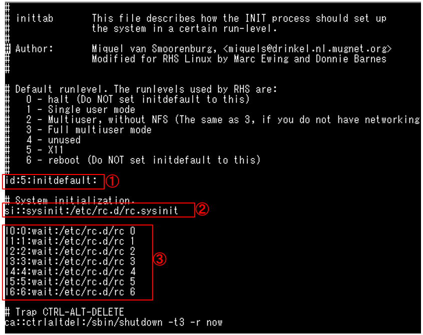

SysVinitによる起動
initプロセス
SysVinitは初めにinitというプロセスが実行される。initプロセスは
- /etc/inittabファイルの読み込み //システムの初期化など
- /etc/rc.sysinitフスクリプト呼び出し //ネットワークの設定など。
- /etc/rc.d/rc 引数 の形でスクリプト実行 (Nはinittab内のデフォルトランレベルの数字になります)
- rcスクリプトが/etc/rcN.d ディレクトリ以下のスクリプト実行 (Nはinittab内のデフォルトランレベルの数字になります)
なお、2及び3番の処理は以下の画像のようにinittabに記載されています(画像はこちらからお借りしました。正直このサイトがわかりやすすぎてこれをを見れば済む話ですが……。まあ備忘録なので、、)
①がデフォルのランレベルの指定。
②が/etc/rc.sysinitフスクリプト呼び出し(ランレベルにかかわらず必ず行われます。
③が/etc/rc.d/rc スクリプト実行。今回なら引数は5なので/etc/rc.d/rc 5が実行されその結果/rc5.dディレクトリ以下のスクリプトが実行されます。
なお/etc/rcN.d以下のファイルはすべて/etc/init.dディレクト以下にある起動ファイルへのシンボリックリンクです。
なので例えばコマンドプロンプトで
/etc/init.d/httpd start
のように直接スクリプトを起動することもできます。